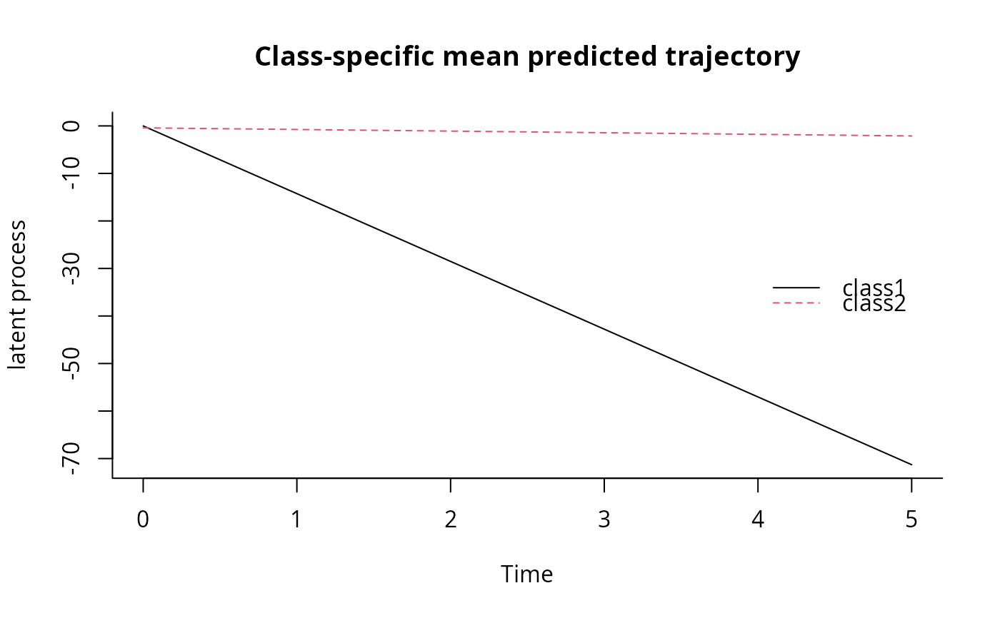
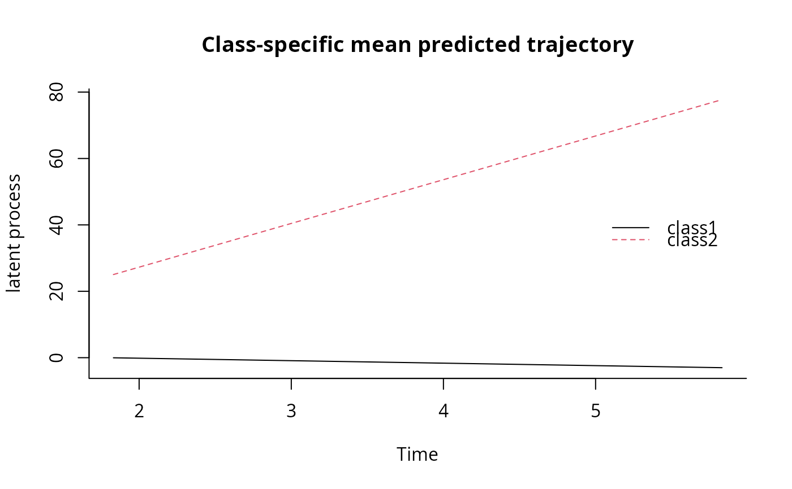

Plot of predicted trajectories and link functions
Source:R/plot.predictL.R, R/plot.predictY.R, R/plot.predictYcond.R
plot.predict.RdThis function provides the class-specific predicted trajectories stemmed
from a hlme, lcmm, multlcmm or Jointlcmm object.
Usage
# S3 method for class 'predictL'
plot(x, legend.loc = "topright", legend, add = FALSE, shades = FALSE, ...)
# S3 method for class 'predictY'
plot(
x,
outcome = 1,
legend.loc = "topright",
legend,
add = FALSE,
shades = FALSE,
...
)
# S3 method for class 'predictYcond'
plot(x, legend.loc = "topleft", legend, add = FALSE, shades = TRUE, ...)Arguments
- x
an object inheriting from classes
predictL,predictYorpredictlinkrepresenting respectively the predicted marginal mean trajectory of the latent process, the predicted marginal mean trajectory of the longitudinal outcome, or the predicted link function of a fitted latent class model.- legend.loc
keyword for the position of the legend from the list
"bottomright","bottom","bottomleft","left","topleft","top","topright","right"and"center".- legend
character or expression to appear in the legend. If no legend should be added,
"legend"should be NULL.- add
logical indicating if the curves should be added to an existing plot. Default to FALSE.
- shades
logical indicating if confidence intervals should be represented with shades. Default to FALSE, the confidence intervals are represented with dotted lines.
- ...
other parameters to be passed through to plotting functions or to legend
- outcome
for
predictYand multivariate model fitted withmultlcmmonly, the outcome to consider.
Examples
################# Prediction from linear latent class model
## fitted model
m<-lcmm(Y~Time*X1,mixture=~Time,random=~Time,classmb=~X2+X3,
subject='ID',ng=2,data=data_hlme,B=c(0.41,0.55,-0.18,-0.41,
-14.26,-0.34,1.33,13.51,24.65,2.98,1.18,26.26,0.97))
## newdata for predictions plot
newdata<-data.frame(Time=seq(0,5,length=100),
X1=rep(0,100),X2=rep(0,100),X3=rep(0,100))
plot(predictL(m,newdata,var.time="Time"),legend.loc="right",bty="l")

## data from the first subject for predictions plot
firstdata<-data_hlme[1:3,]
plot(predictL(m,firstdata,var.time="Time"),legend.loc="right",bty="l")

if (FALSE) { # \dontrun{
################# Prediction from a joint latent class model
## fitted model - see help of Jointlcmm function for details on the model
m3 <- Jointlcmm(fixed= Ydep1~Time*X1,mixture=~Time,random=~Time,
classmb=~X3,subject='ID',survival = Surv(Tevent,Event)~X1+mixture(X2),
hazard="3-quant-splines",hazardtype="PH",ng=3,data=data_lcmm,
B=c(0.7576, 0.4095, -0.8232, -0.2737, 0, 0, 0, 0.2838, -0.6338,
2.6324, 5.3963, -0.0273, 1.398, 0.8168, -15.041, 10.164, 10.2394,
11.5109, -2.6219, -0.4553, -0.6055, 1.473, -0.0383, 0.8512, 0.0389,
0.2624, 1.4982))
# class-specific predicted trajectories
#(with characteristics of subject ID=193)
data <- data_lcmm[data_lcmm$ID==193,]
plot(predictY(m3,newdata=data,var.time="Time"),bty="l")
} # }